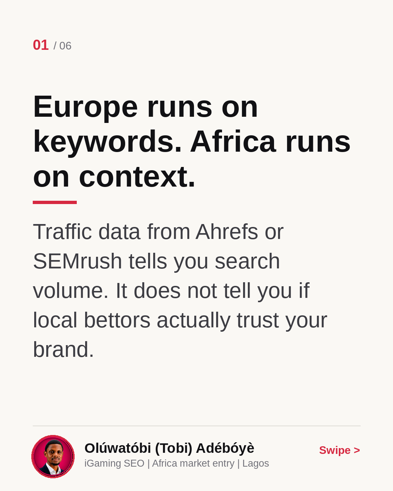
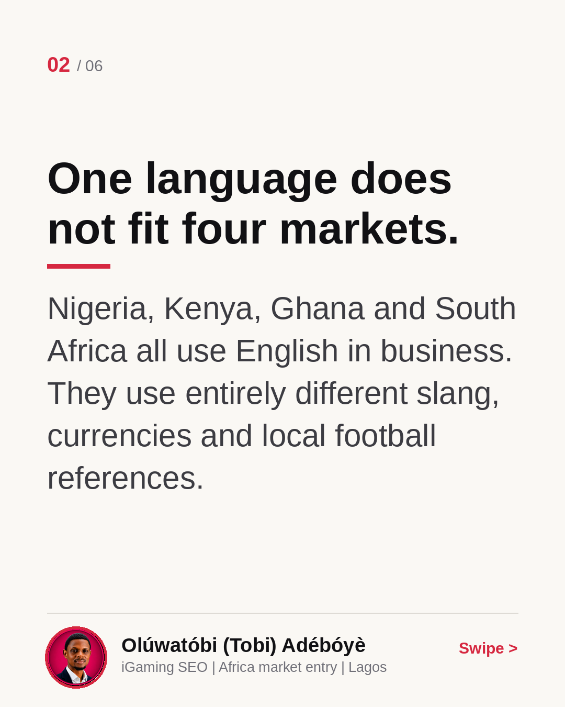
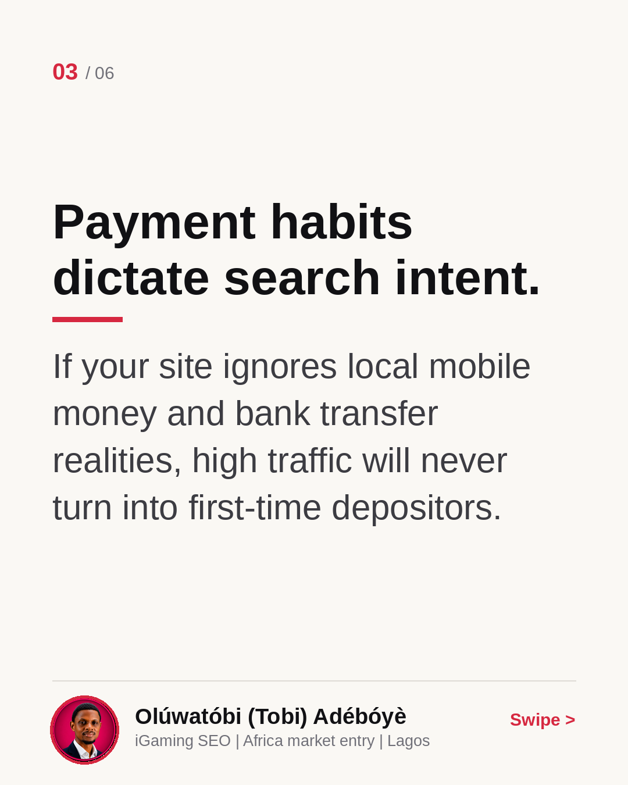
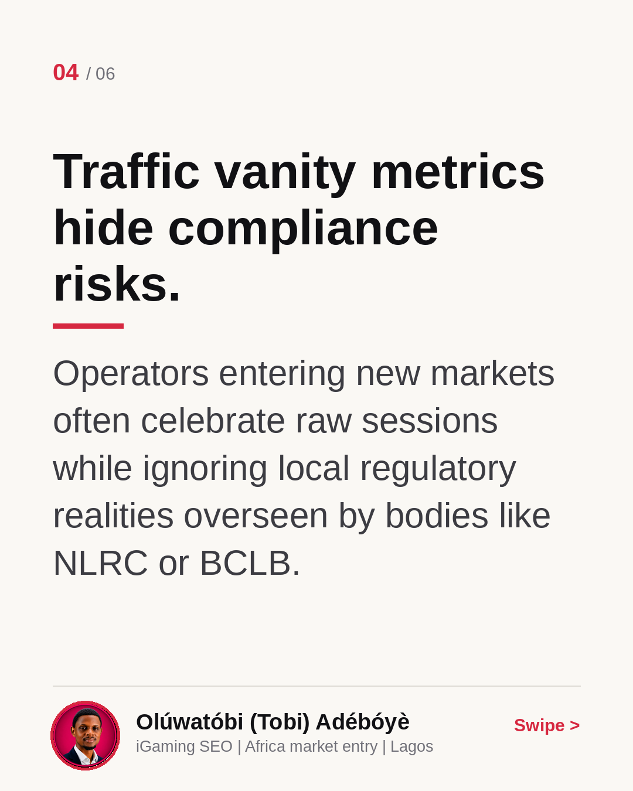
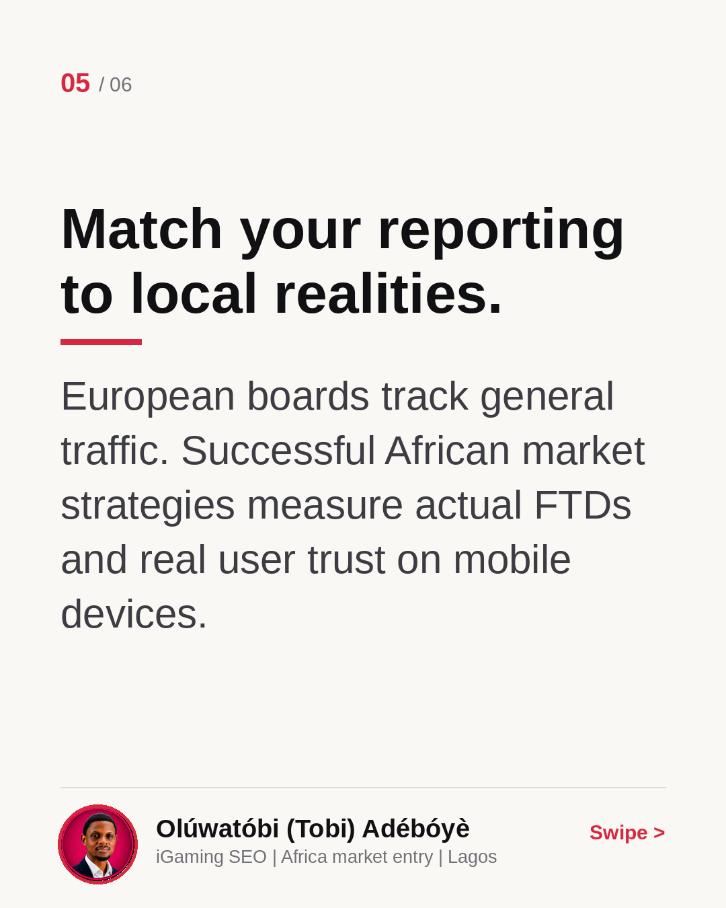
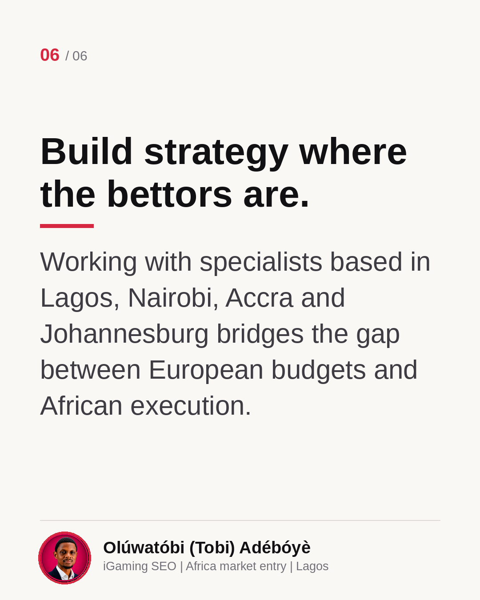

Reading African iGaming markets from Europe
European operators and investors often look at African iGaming through dashboards built for mature markets. That leads to invisible brands and wasted spend across Nigeria, Kenya, Ghana and South Africa. This carousel breaks down how to read the signals that actually matter. Swipe through and let me know in the comments: what is your biggest blind spot when reviewing foreign traffic?
Europe runs on keywords. Africa runs on context.
Traffic data from Ahrefs or SEMrush tells you search volume. It does not tell you if local bettors actually trust your brand.

One language does not fit four markets.
Nigeria, Kenya, Ghana and South Africa all use English in business. They use entirely different slang, currencies and local football references.

Payment habits dictate search intent.
If your site ignores local mobile money and bank transfer realities, high traffic will never turn into first-time depositors.

Traffic vanity metrics hide compliance risks.
Operators entering new markets often celebrate raw sessions while ignoring local regulatory realities overseen by bodies like NLRC or BCLB.

Match your reporting to local realities.
European boards track general traffic. Successful African market strategies measure actual FTDs and real user trust on mobile devices.

Build strategy where the bettors are.
Working with specialists based in Lagos, Nairobi, Accra and Johannesburg bridges the gap between European budgets and African execution.
